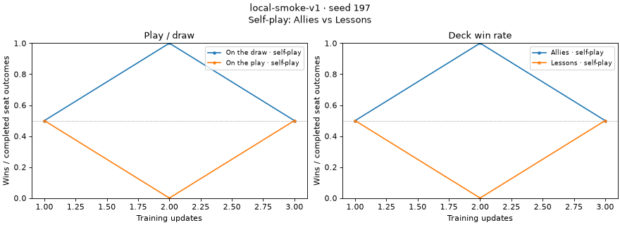
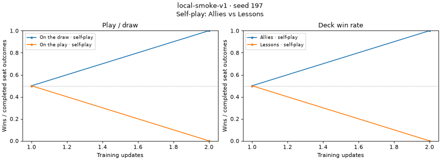

Product path exercised: uv run manabot train on CPU (the local recipe and a CPU process-recovery regime), then the offline reader read_updates and the notebook report's self_play_figures, the way someone inspects training. All runs were small (2 streams, 16 transitions, ≤15 updates), under /tmp/qa273, and are stopped. No frozen runs or other Tasks' processes were touched.
uv run manabot train --device cpu --steps 3 --seed 197 --out /tmp/qa273/run1 local: completed; run: cc7717c9… (16 s wall)
The Etude run contains artifacts/self-play-outcomes/<sha256>.json. Each file's SHA-256 equals its name. The only outcome name in the metric manifest is self_play_outcomes/table; no deck-hash names appear. Updates 1 and 3 had identical counts and share one digest, while staying separate updates.
{"format":"self-play-outcomes-v1","rows":[{"deck":"7d663f…","opponent_deck":"fc9481…","position":"draw","wins":2,"losses":0,"draws":0},
{"deck":"fc9481…","opponent_deck":"7d663f…","position":"play","wins":0,"losses":2,"draws":0}]}
The two seat rows agree: 2 games, both won by the deck on the draw.
read_updates returns updates [1, 2, 3] and projects the familiar self_play_outcomes/<deck>/<opp>/<play|draw>/wins|losses|draws counts. A cp -R of the run to a new directory read identically. The report figure, rendered from the copied run:

I copied a retained local run from before this change (scalar outcome columns, from another worktree's .runs/) next to the new run and loaded both with load_evidence. Both produce points, and the report draws one figure per run. Historical metrics are read unchanged.

| Scenario | Result |
|---|---|
Copy without artifacts/ | Fails with FileNotFoundError: …/artifacts/self-play-outcomes/744dd9….json. It does not silently report zero games. The path in the error tells you what is missing. |
| Edit one count in a referenced table | ValueError: self-play outcome table digest mismatch |
--seconds 12, status interrupted) kept the tables for its 5 completed updates. The reader returns [1..5], and there are no .partial leftovers.schedule_clock=iteration_fraction and recovery_max_microsteps. I killed the first attempt after update 7. A second attempt ran with --resume-from into the same Etude run, resuming at updates=7, and was killed after update 15's checkpoint. The reader selects updates 1–14 across both attempts, each with 4 seat outcomes (2 games), and learner transitions increase monotonically.Outcome tables were published with mode 0600. Every other file in the run (metric blocks, manifests, checkpoints) is 0644. The tables were staged with NamedTemporaryFile, which is owner-only, and renamed as-is. That would break a reader, syncer or teammate account that can read the rest of the run. The tables now get 0666 & ~umask before the rename (manabot/training/outcome_tables.py). This was confirmed live: tables from the resumed run are -rw-r--r--. I added test_outcome_table_mode_follows_umask_like_metric_files. test_outcome_tables.py, test_self_play.py, test_etude_sdk.py and the both-seat test_rl_runtime raw/EMA check pass, and Ruff is clean.
docs/training.md.scripts/diagnose_outcome_index.py reproduces the numbers in experiments/self-play-collection-273.md exactly. At 8 blocks, the scalar representation's peak traced Python allocation is 2,160,340 bytes and the table representation's is 49,433 bytes.scratch/mtg-273.md).etude launch, shipping to r2) was not exercised. That needs a rental. Shipment ordering and relocation are covered by test_outcome_tables_ship_and_read_from_relocated_run against the real SDK carrier.comparison.html end to end. I called self_play_figures directly on load_evidence, which is the function the notebook calls.manabot train ignored two SIGINTs (one via uv run, one sent directly to the Python process) for several updates, and only SIGTERM stopped it. Someone pressing Ctrl-C on a long run may see the same thing.